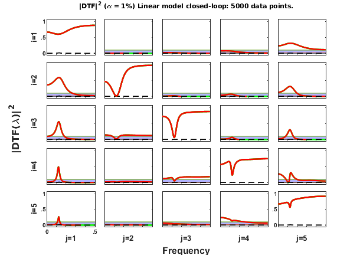
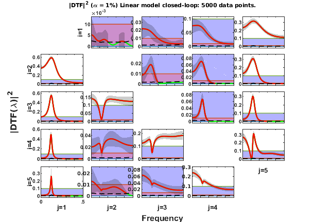

Contents
- BACCALA & SAMESHIMA (2001A) EXAMPLE 5
- Data sample generation
- Data pre-processing: detrending and normalization options
- MVAR model estimation
- Granger causality test (GCT) and instantaneous GCT
- Information PDC estimation
- iPDC2 Matrix-Layout Plotting
- Original/Information DTF estimation
- DTF2 Matrix Layout Plotting with fixed y-axis scale
- Concluding remarks
BACCALA & SAMESHIMA (2001A) EXAMPLE 5
DESCRIPTION:
Five-dimensional linear VAR[2] Model Example 4
x1==>x2 x2-->x3 x3-->x4 x4<-->x5 x5-->x1
Example borrowed from: Baccala & Sameshima (2001). Partial directed coherence: a new concept in neural structure determination. Biol. Cybern. 84:463--474.
http://dx.doi.org/10.1007/PL00007990
Example Five-dimensional VAR[2] with loop and feedback
close all; clear; clc
Data sample generation
nDiscard = 10000; % number of points discarded at beginning of simulation nPoints = 5000; % number of analyzed samples points u = fbaccala2001a_ex5( nPoints, nDiscard ); chLabels = {'x_1';'x_2';'x_3';'x_4';'x_5'}; fs = 1;
======================================================================
Pentavariate linear VAR[2] Model Example 5 - closed-loop
Baccala & Sameshima. Biol. Cybern. 84:463-474, 2001.
x1==>x2 x2-->x3 x3-->x4 x4-->x5 x5-->x4 x5-->x1
======================================================================
Data pre-processing: detrending and normalization options
flgDetrend = 1; % Detrending the data set flgStandardize = 0; % No standardization [nChannels,nSegLength] =size(u); if nChannels > nSegLength u = u.'; [nChannels,nSegLength]=size(u); end % Detrending the data set and no detrending for i=1:nChannels, u(i,:)=detrend(u(i,:)); end disp('Time series were detrended,'); disp(' and not scale-standardized.');
Time series were detrended,
and not scale-standardized.
MVAR model estimation
maxIP = 30; % maximum model order to consider. alg = 1; % 1: Nutall-Strand MVAR estimation algorithm; % % 2: minimum least squares methods; % % 3: Vieira Morf algorithm; % % 4: QR ARfit algorith. criterion = 1; % Criterion for order choice: % % 1: AIC, Akaike Information Criteria; % % 2: Hanna-Quinn; % % 3: Schwartz; % % 4: FPE; % % 5: fixed order given by maxIP value. disp('Running MVAR estimation routine...') [IP,pf,A,pb,B,ef,eb,vaic,Vaicv] = mvar(u,maxIP,alg,criterion); pause(3); disp(['Number of channels = ' int2str(nChannels) ' with ' ... int2str(nSegLength) ' data points; MAR model order = ' int2str(IP) '.']);
Running MVAR estimation routine... maxOrder limited to 30 IP=1 vaic=220130.018052 IP=2 vaic=213102.937110 IP=3 vaic=213139.109763 Number of channels = 5 with 5000 data points; MAR model order = 2.
Testing for adequacy of MAR model fitting through Portmanteau test
h = 20; % testing lag MVARadequacy_signif = 0.05; % VAR model estimation adequacy significance % level aValueMVAR = 1 - MVARadequacy_signif; % Confidence value for the testing flgPrintResults = 1; [Pass,Portmanteau,st,ths] = mvarresidue(ef,nSegLength,IP,aValueMVAR,h,... flgPrintResults);
====================================================================================================
MVAR RESIDURES TEST FOR WHITENESS
----------------------------------------------------------------------------------------------------
Good MAR model fitting! Residues white noise hypothesis NOT rejected.
Pass = 0.028
st = 390.968
Granger causality test (GCT) and instantaneous GCT
gct_signif = 0.01; % Granger causality test significance level igct_signif = 0.01; % Instantaneous GCT significance level flgPrintResults = 1; % Flag to control printing gct_alg.m results on command window. [Tr_gct, pValue_gct] = gct_alg(u,A,pf,gct_signif,flgPrintResults); [Tr_igct, pValue_igct] = igct_alg(u,A,pf,igct_signif,flgPrintResults);
====================================================================================================
GRANGER CAUSALITY TEST
----------------------------------------------------------------------------------------------------
Connectivity matrix:
NaN 0 0 0 1
1 NaN 0 0 0
0 1 NaN 0 0
0 0 1 NaN 1
0 0 0 1 NaN
Granger causality test p-values:
NaN 0.2096 0.9970 0.1459 0
0 NaN 0.4044 0.0155 0.9958
0.7102 0 NaN 0.0970 0.4560
0.1540 0.0166 0 NaN 0
0.3566 0.2393 0.9152 0 NaN
====================================================================================================
INSTANTANEOUS GRANGER CAUSALITY TEST
----------------------------------------------------------------------------------------------------
Instantaneous connectivity matrix:
NaN 0 0 0 0
0 NaN 0 0 0
0 0 NaN 0 0
0 0 0 NaN 0
0 0 0 0 NaN
Instantaneous Granger Causality test p-values:
NaN 0.0374 0.3915 0.8271 0.2348
0.0374 NaN 0.6838 0.8997 0.0877
0.3915 0.6838 NaN 0.8804 0.3976
0.8271 0.8997 0.8804 NaN 0.0785
0.2348 0.0877 0.3976 0.0785 NaN
>>>> Instantaneous Granger Causality NOT detected.
====================================================================================================
Information PDC estimation
PDC analysis results are saved in c struct variable. See asymp_pdc.m for details.
nFreqs = 256; metric = 'info'; % info = information PDC (iPDC) or iDTF. alpha = 0.01; c = asymp_pdc(u,A,pf,nFreqs,metric,alpha); % Estimate PDC and asymptotic statistics c.pvaluesgct = pValue_gct; % Necessary as flgPrinting(5) = 3, i.e. printing GCT c.Tragct = Tr_gct;
iPDC2 Matrix-Layout Plotting
flgPrinting = [1 1 1 0 3 0 2]; % With GCT and log-spectra on main diagonal flgColor = 0; w_max=fs/2; vTitle = 'Baccala & Sameshima (2001A) - Example 5'; [h1,hxlabel hylabel] = xplot(vTitle,c,flgPrinting,fs,w_max,chLabels,flgColor); xplot_title(alpha,metric,'pdc',['Linear model Example 5: ' ... int2str(nPoints) ' data points.']);
Original/Information DTF estimation
DTF analysis results will be saved in d struct variable. See asymp_dtf.m for further details.
metric = 'info'; d = asymp_dtf(u,A,pf,nFreqs,metric,alpha); % Estimate DTF and asymptotic statistics
DTF2 Matrix Layout Plotting with fixed y-axis scale
flgPrinting = [1 1 1 0 0 0 2]; % Plot log-spectra on main-diagonal flgColor = 1; w_max=fs/2; flgMax = 'TCI'; flgScale = 1; flgSignifColor = 3; [h2,hxlabel,hylabel] = xplot(vTitle,d,flgPrinting,fs,w_max,chLabels, ... flgColor,flgScale,flgMax,flgSignifColor); xplot_title(alpha,metric,'dtf',['Linear model Example 5: ' ... int2str(nPoints) ' data points.']);
Note that the magnitude is not necessarily adequate criteria for the presence of connectivity.
DTF Matrix Layout Plotting with y-axis scaling
flgPrinting = [1 1 1 2 2 0 0]; % Without power spectra on main-diagonal flgColor = 1; w_max=fs/2; flgMax = 'TCI'; flgScale = 3; flgSignifColor = 3; [h3,hxlabel,hylabel] = xplot(vTitle,d,flgPrinting,fs,w_max,chLabels, ... flgColor,flgScale,flgMax,flgSignifColor); xplot_title(alpha,metric,'dtf',['Linear model Example 5: ' ... int2str(nPoints) ' data points.']);
Note that theoretically any node or strutucture is reachable from all other structures. If sufficiently large sample size is used, all DTF will be significant.
Suggestion: try playing with different sample sizes, i.e. changing nPoints parameter.
Concluding remarks
- Check & compare with Fig.4b, page 469 in Baccala & Sameshima (2001).
- In the original article the amplitude PDC has been plotted. Here we preferred to graph squared-PDC and DTF.